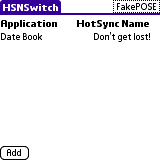
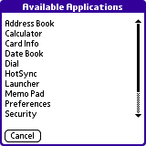
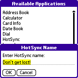
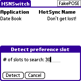

When adding a new PDA to your collection you might face the dilemma of having some application which is not able to run on the new device due to license obstacles.
I retired my Tungsten T when I got a new Palm handheld. The new PDA inherited the HotSync name as it was my primary PDA. My Tungsten T was going to be a replacement for my Gameboy - it would need a new HotSync name.
Unfortunately, by changing the HotSync name all the games I've bought wouldn't run in full mode as their license was bound to the old HotSync name.
Enter HSNSwitch. HSNSwitch will dynamically change the HotSync name when launching a program and reset the HotSync name to the previous name.
Installation of HSNSwitch is like installing any other Palm OS program:
When the synchronization is done you will have a 'HSNSwitch' icon in the Unfiled category on your Palm PDA. Feel free to move HSNSwitch to another category.
HSNSwitch was designed with Palm OS 5.0 (Tungsten T and others) in mind where it works flawlessly. Compatibility with OS 5.1 - 5.4 has been tested on the Palm Simulator and HSNSwitch was found to work on these OS versions as well. However, this has not been verified on a real-life device.
In any case - please do a full HotSync before using HSNSwitch!
HSNSwitch changes the content of the preferences record for the HotSync program. This record is where the HotSync name is stored and is the same record that applications may read (directly or indirectly) when calculating license keys.
HSNSwitch is sent a notification whenever an application is launched or when a application is quitting. When launching, the HotSync record is setup so that it matches the desired HotSync name. When quitting, the HotSync record is reset to the default value.
Before installing HSNSwitch you must do a full HotSync. That way, your device is given a default HotSync name.
Tap on the HSNSwitch icon. The list contains the applications (left) for which a special HotSync name (right should be used).
Tap on Add to add a new application.
Enter the desired HotSync name for this application and tap OK.
Redo this for the applications which needs a special HotSync name.
On the first run (or by selecting the Detect menu item) the Detect dialog is shown. The detection tries to locate the HotSync record. This record is usually within the first 5 preferences entries for the HotSync application so the default number of slots to search should be safe. The detection only works when you have done a HotSync beforehand where the HotSync name has been set. The outcome of the detection is either:
If the record is not found ... use the source!